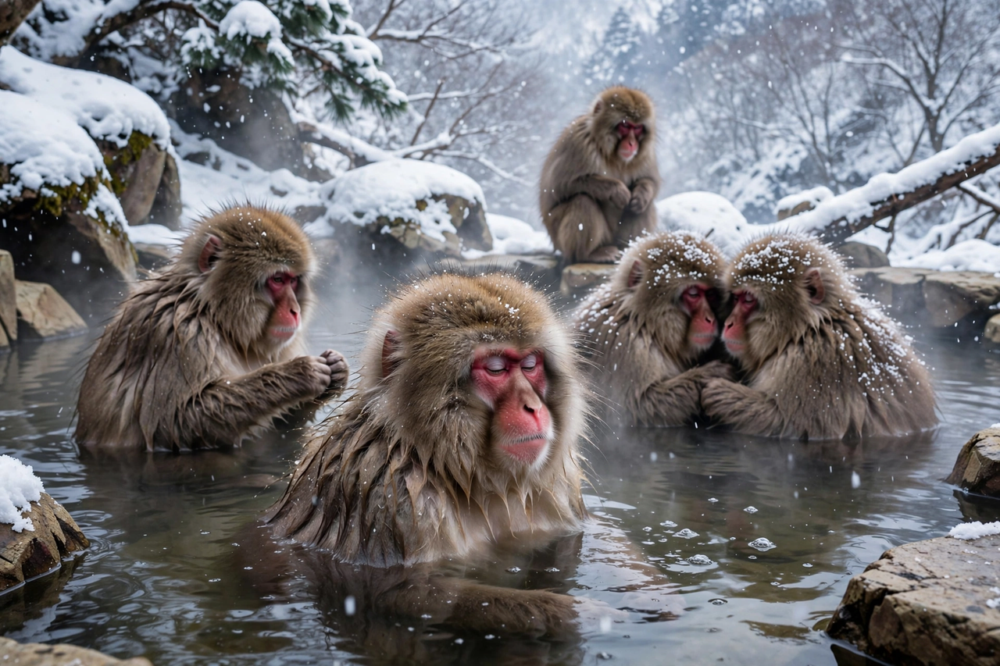

| Japanese macaque | |
|---|---|
| Scientific name | Macaca fuscata |
| Other name | Snow monkey |
| Order | Primates |
| Family | Cercopithecidae |
| Conservation status | Least Concern (IUCN) |
| Range | Japan (Honshu, Shikoku, Kyushu, and smaller islands) |
| Head–body length | 79–95 cm including tail stub |
| Mass | Males ~11 kg; females ~8 kg |

The Japanese macaque (Macaca fuscata), also known as the snow monkey, is a terrestrial Old World monkey species native to Japan. It has the northernmost range of any non-human primate, surviving winters with temperatures below −15 °C (5 °F) in snow-covered mountain forests. Japanese macaques are famous for bathing in hot springs (onsen) in winter, for their complex social cultures — including the invention and transmission of sweet-potato washing — and for their striking red faces and thick grey-brown fur.
The species is found on three of Japan's four main islands — Honshu, Shikoku and Kyushu — plus several smaller islands; the northernmost troops live on the Shimokita Peninsula of Aomori Prefecture, the "northern limit of monkeys" monument. A southern subspecies, the Yakushima macaque (M. f. yakui), inhabits the ancient cedar forests of Yakushima. Habitats range from subtropical lowland forest to subalpine coniferous forest at up to 3,180 m. A free-ranging troop also exists in Texas, introduced in 1972.
Troops of 20–100 individuals are organised in matrilineal hierarchies, with females philopatric and males dispersing between troops. Grooming maintains bonds; rank influences access to food, mates and the centre of huddles in winter. The hot-spring bathing at Jigokudani Monkey Park in Nagano — begun in the 1960s when a young female entered an outdoor bath — is now performed by the whole troop and measurably reduces winter stress hormones. Japanese macaques are celebrated in primatology for cultural traditions: in 1953 a young female named Imo on Kōjima island began washing sweet potatoes in the sea, a behaviour that spread through the troop and became a classic case study in animal culture; the same troop developed wheat-sifting in water. Stone handling — a playful manipulation behaviour — has likewise been transmitted socially in several troops.
Omnivorous and opportunistic, Japanese macaques eat fruit, seeds, leaves, bark, buds, insects, eggs, fungi and soil, varying the diet seasonally; in snowy winters they subsist largely on bark and winter buds. Predators are few (mountain hawk-eagles, raccoon dogs and historically the extinct Japanese wolf), and life spans reach around 30 years in females in the wild, longer in captivity.
Monkeys feature prominently in Japanese folklore and religion, from the three wise monkeys of Nikkō to the saru-mawashi street performances. Today crop raiding drives conflict, and management includes culls in some prefectures even as other troops are protected and provisioned as tourist attractions. The species is listed as Least Concern, with populations generally stable or increasing.